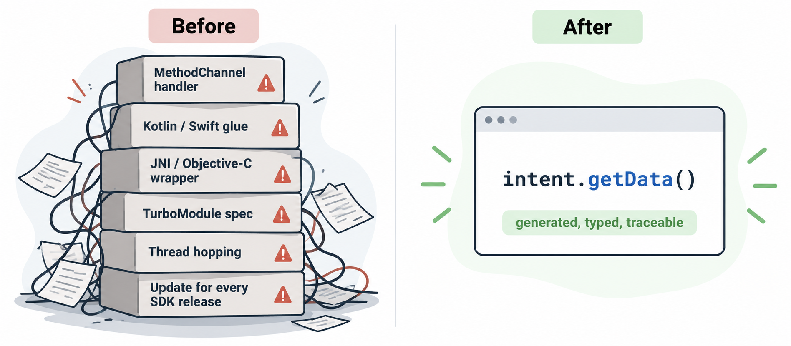

Use native APIs directly. Skip the boilerplate.
native-api-bindgen reads the Android SDK and the Xcode SDK already on your machine and generates typed Dart and TypeScript bindings for the APIs you choose. No MethodChannel, no hand-written plugin per API, no copied SDK files.
Beta 0.1.0-beta.1 on pub.dev, npm and Homebrew. Tested end to end on an Android emulator and an iOS simulator; not yet on physical devices.
platform:
android:
platform: "36"
minApi: 24
entries:
- android.content.Intent
- android.net.Uri
ios:
frameworks: [Foundation, UIKit]
classes: [UIDevice, UIView]// Android, over package:jni
final uri = Uri.parse('https://x.dev'.toJString())!;
print(uri.scheme); // getScheme()
final intent = Intent()
..setFlags(Intent$Flag.FLAG_ACTIVITY_NEW_TASK);
// Kotlin suspend → Future
final greeting = await greeter.greetLater(20);
// iOS, over package:objective_c
final device = ios.UIDevice.currentDevice;
print(device.systemName.toDartString());// React Native, over JSI
const intent =
Intent.new$String$Uri(
Intent.ACTION_VIEW,
Uri.parse('https://x.dev'));
// Kotlin suspend → Promise
const name = await
greeter.greetLater(20n);objc_msgSend and JSI. No message serialization.01The problem
Native APIs shouldn't need a plugin each.
Calling a platform API that your framework does not expose usually means MethodChannel handlers, JNI and Objective-C wrappers, TurboModule specs and thread hopping — then keeping all of it in step with every new Android and iOS release.

02How it works
From SDK to typed binding in three steps.
One pipeline for both platforms: parse the official SDK, build a platform-neutral IR, then emit code for each target with a small runtime.
Parse
Read the SDK you have.
A class-file reader for android.jar, AndroidX and Kotlin; libclang and Swift symbol graphs for Xcode SDKs.
Model
One Native IR.
Types, generics, nullability, availability, threading and provenance, with stable symbol IDs and a reason for every skip.
Generate
Bindings, not boilerplate.
Dart over package:jni or package:objective_c; TypeScript over one C++ Turbo Module and JSI.

03Four targets
Flutter and React Native, Android and iOS.
All four combinations work end to end and run on-device test suites.
Flutter · Android
Dart over package:jni.
Extension types, generics, bean properties, typed @IntDef constants, Java interfaces implemented in Dart, Kotlin suspend as Future and Flow as Stream.
Flutter · iOS
Dart over package:objective_c.
Structs, NSError ** as exceptions, availability and main-actor checks, blocks; Swift-only APIs through generated @objc adapters.
React Native · Android
TypeScript over JSI and JNI.
New Architecture: one pure C++ Turbo Module, data-driven member tables, Promises for Kotlin suspend, byte[] as Uint8Array.
React Native · iOS
TypeScript over JSI and Objective-C++.
Signatures from the Objective-C runtime, blocks and protocols implemented in JavaScript, main-thread APIs dispatched for you.
What has been tested →04Measured, not promised
Real numbers from real builds.
Every figure on this site is read from docs/benchmarks at build time. Conditions are on the Compatibility page.
App size
Generate the whole SDK, pay for one API.
A Flutter release APK that uses one Android API is 14,842,216 bytes whether bindings were generated for that API or for all of android.jar — unused bindings are tree-shaken.
Keeping up
New SDK? Run update.
native-api-bindgen update regenerates configured targets and diff shows added, removed and deprecated APIs between SDK versions.
05Install
Get it from pub.dev, Homebrew or npm.
The CLI is a Dart package and a prebuilt binary; the runtimes your app depends on are on pub.dev (Flutter) and npm (React Native). Current release: 0.1.0-beta.1.
# CLI from pub.dev (Dart 3.9+)
dart pub global activate native_api_bindgen
# or the prebuilt CLI from Homebrew (macOS / Linux, no Dart SDK needed)
brew install lkrjangid1/tap/native-api-bindgen
# optional: the React Native runtime from npm (generated bindings embed a copy)
npm install native-api-bindgen-runtime@betapub.dev
native_api_bindgen
The CLI, plus native_api_runtime (guards, errors, coroutines) and native_api_ui (native views) for your Flutter app.
Homebrew
lkrjangid1/tap
Prebuilt native-api-bindgen binaries for macOS (arm64, x64) and Linux (x64, arm64), built from each GitHub Release.
npm
native-api-bindgen-runtime
The React Native runtime (JSI over JNI and Objective-C++) for apps that prefer a dependency to the embedded copy.
npm →Call your first native API in minutes.
Install the CLI, pick the APIs you need, generate. Every member that is not generated comes with a reason.